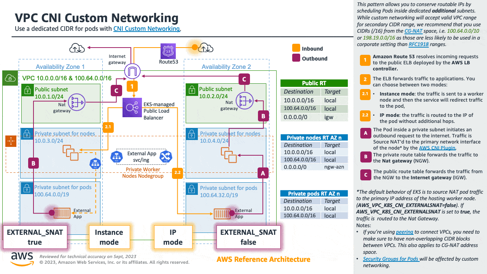

優化 IP 位址利用率¶
由於應用程式現代化的推動,容器化環境正以快速的速度擴大規模。這意味著越來越多的工作節點和 Pod 正在被部署。
Amazon VPC CNI 外掛程式會從 VPC 的 CIDR 範圍分配 IP 位址給每個 Pod。這種方法可以使用 VPC Flow Logs 和其他監控解決方案來完全掌握 Pod 位址。根據您的工作負載類型,這可能會導致大量 IP 位址被 Pod 所消耗。
在設計 AWS 網路架構時,優化 Amazon EKS IP 消耗量在 VPC 和節點層級都很重要。這將有助於您緩解 IP 耗盡問題,並提高每個節點的 Pod 密度。
在本節中,我們將討論可以幫助您實現這些目標的技術。
優化節點層級的 IP 消耗¶
前綴委派是 Amazon Virtual Private Cloud (Amazon VPC) 的一項功能,允許您將 IPv4 或 IPv6 前綴分配給您的 Amazon Elastic Compute Cloud (Amazon EC2) 實例。它增加了每個網路介面 (ENI) 的 IP 位址,從而提高了每個節點的 Pod 密度和計算效率。前綴委派也支持自定義網絡。
有關詳細信息,請參見使用 Linux 節點的前綴委派和使用 Windows 節點的前綴委派部分。
緩解 IP 耗盡¶
為了防止您的集群消耗所有可用的 IP 位址,我們強烈建議您在設計 VPC 和子網時考慮未來的增長。
採用 IPv6 是避免這些問題的好方法。但是,對於那些可擴展性需求超出初始規劃且無法採用 IPv6 的組織來說,改善 VPC 設計是應對 IP 位址耗盡的推薦方法。Amazon EKS 客戶中最常用的技術是向 VPC 添加非可路由的次要 CIDR,並配置 VPC CNI 使用這些額外的 IP 空間來分配 Pod 的 IP 位址。這通常被稱為自定義網絡。
我們將介紹您可以用來優化分配給節點的 IP 暖池的 Amazon VPC CNI 變量。我們將在本節結尾介紹一些其他的架構模式,這些模式並不是 Amazon EKS 固有的,但可以幫助緩解 IP 耗盡問題。
使用 IPv6 (推薦)¶
採用 IPv6 是解決 RFC1918 限制的最簡單方法;我們強烈建議您將採用 IPv6 作為選擇網絡架構的首選選項。IPv6 提供了大得多的總 IP 位址空間,集群管理員可以專注於遷移和擴展應用程序,而無需投入精力來解決 IPv4 的限制。
Amazon EKS 集群同時支持 IPv4 和 IPv6。默認情況下,EKS 集群使用 IPv4 地址空間。在集群創建時指定 IPv6 地址空間將啟用 IPv6 的使用。在 IPv6 EKS 集群中,Pod 和服務將獲得 IPv6 地址,同時保持與在 IPv6 集群上運行的服務進行 IPv4 端點連接的能力,反之亦然。集群內部的 Pod 到 Pod 通信始終通過 IPv6 進行。在 VPC (/56) 內,IPv6 CIDR 塊大小為 /64。這提供了 2^64 (約 18 個五十億)個 IPv6 地址,允許您在 EKS 上擴展部署。
有關詳細信息,請參見在 Amazon EKS 上運行 IPv6 集群部分,如需動手實踐,請參見了解 Amazon EKS 上的 IPv6部分,這是在 AWS 上使用 IPv6 的動手實驗的一部分。

優化 IPv4 集群中的 IP 消耗¶
本節專門針對正在運行傳統應用程序和/或尚未準備好遷移到 IPv6 的客戶。雖然我們鼓勵所有組織盡快遷移到 IPv6,但我們也意識到一些組織可能仍需要研究其他方法來擴展其容器工作負載的 IPv4。因此,我們還將為您介紹使用 Amazon EKS 集群優化 IPv4 (RFC1918) 地址空間消耗的架構模式。
規劃增長¶
作為防止 IP 耗盡的第一道防線,我們強烈建議您在設計 IPv4 VPC 和子網時考慮未來的增長,以防止您的集群消耗所有可用的 IP 位址。如果子網沒有足夠的可用 IP 位址,您將無法創建新的 Pod 或節點。
在構建 VPC 和子網之前,建議您從所需的工作負載規模開始倒推。例如,當使用 eksctl (一個用於在 EKS 上創建和管理集群的簡單 CLI 工具)構建集群時,默認情況下會創建 /19 子網。/19 的子網掩碼適用於大多數工作負載類型,允許分配超過 8000 個地址。
Attention
在設置 VPC 和子網時,除了 Pod 和節點之外,還可能有其他消耗 IP 位址的元素,例如負載均衡器、RDS 數據庫和其他 VPC 內部服務。
此外,Amazon EKS 可以創建最多 4 個彈性網絡接口 (X-ENI),這些接口是為了允許與控制平面進行通信而需要的(更多信息在此)。在集群升級期間,Amazon EKS 會創建新的 X-ENI,並在升級成功時刪除舊的 X-ENI。因此,我們建議至少使用 /28 (16 個 IP 位址)的子網掩碼來關聯 EKS 集群。
您可以使用示例 EKS 子網計算器電子表格來規劃您的網絡。該電子表格根據工作負載和 VPC ENI 配置計算 IP 使用情況。將 IP 使用情況與 IPv4 子網進行比較,以確定配置和子網大小是否足以滿足您的工作負載。請記住,如果 VPC 中的子網耗盡可用 IP 位址,我們建議使用 VPC 的原始 CIDR 塊創建新的子網。請注意,現在Amazon EKS 允許修改集群子網和安全組。
擴展 IP 空間¶
如果您即將耗盡 RFC1918 IP 空間,您可以使用自定義網絡模式通過在專用的附加子網中調度 Pod 來保留可路由的 IP。
雖然自定義網絡將接受 VPC 範圍內的有效次要 CIDR 範圍,但我們建議您使用 CG-NAT 空間中的 CIDR (/16),即 100.64.0.0/10 或 198.19.0.0/16,因為這些範圍在企業環境中使用的可能性較小。
有關詳細信息,請參見自定義網絡的專門部分。

優化 IP 暖池¶
在默認配置下,VPC CNI 會在暖池中保留整個 ENI(及其關聯的 IP)。這可能會消耗大量 IP,特別是在較大的實例類型上。
如果您的集群子網可用的 IP 位址有限,請仔細檢查這些 VPC CNI 配置環境變量:
WARM_IP_TARGETMINIMUM_IP_TARGETWARM_ENI_TARGET
您可以將 MINIMUM_IP_TARGET 的值配置為與您預期在節點上運行的 Pod 數量相匹配。這樣做可以確保在創建 Pod 時,CNI 可以從暖池分配 IP 位址,而無需調用 EC2 API。
請注意,將 WARM_IP_TARGET 的值設置過低可能會導致對 EC2 API 的額外調用,從而可能導致請求被限制。對於大型集群,請與 MINIMUM_IP_TARGET 一起使用,以避免請求被限制。
要配置這些選項,您可以下載 aws-k8s-cni.yaml 清單並設置環境變量。在撰寫本文時,最新版本位於此處。檢查配置值的版本是否與安裝的 VPC CNI 版本匹配。
Warning
當您更新 CNI 時,這些設置將被重置為默認值。請在更新 CNI 之前備份 CNI,並在更新成功後檢查配置設置是否需要重新應用。
您可以在不中斷現有應用程序的情況下即時調整 CNI 參數,但您應該選擇能夠支持您的可擴展性需求的值。例如,如果您正在處理批處理工作負載,我們建議將默認的 WARM_ENI_TARGET 更新為匹配 Pod 規模需求。將 WARM_ENI_TARGET 設置為高值可以一直維護運行大型批處理工作負載所需的暖 IP 池,從而避免數據處理延遲。
Warning
改善 VPC 設計是應對 IP 位址耗盡的推薦方法。考慮 IPv6 和次要 CIDR 等解決方案。調整這些值以最小化暖 IP 數量應該是在排除其他選項後的臨時解決方案。錯誤配置這些值可能會干擾集群操作。
在對生產系統進行任何更改之前,請務必查看此頁面上的注意事項。
監控 IP 位址庫存¶
除了上述解決方案,可見性也很重要。您可以使用 CNI 指標助手監控子網的 IP 利用率。可用的一些指標包括:
- 集群可支持的最大 ENI 數量
- 已分配的 ENI 數量
- 當前分配給 Pod 的 IP 位址數量
- 可用 IP 位址的總數和最大數量
您還可以設置 CloudWatch 警報來在子網即將耗盡 IP 位址時收到通知。請訪問 EKS 用戶指南,了解CNI 指標助手的安裝說明。
Warning
請確保 VPC CNI 的 DISABLE_METRICS 變量設置為 false。
其他考慮因素¶
還有其他不是 Amazon EKS 固有的架構模式可以幫助緩解 IP 耗盡問題。例如,您可以優化 VPC 之間的通信或跨多個帳戶共享 VPC來限制 IPv4 地址分配。
在這裡了解更多關於這些模式的信息: